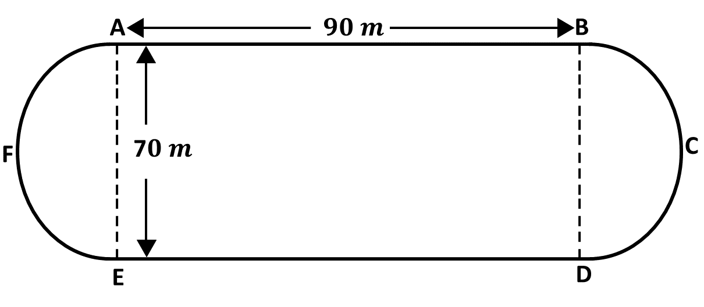

BECE
Year to Practice:
1990
1991
1992
1993
1994
1995
1996
1997
1998
1999
2000
2001
2002A
2002B
2003
2004
2005
2006
2007
2008
2009
2010
2011
2012
2013
2014
2015
2016
2017
2018
2019
2020
2021
2022
2023
2024
PAST QUESTIONS 2000
Time yourself to improve on your speed. You are to use not more than 60 minutes for this section.
Click on the link below when your are ready.
Kindly contact the administrator of the site on WhatsApp or Phone (0208711375) for the link to the test.
Try the questions first, using not more than 15 minutes for each question, and watch the accompanying videos to see how the questions are solved.
Question 1
-
Simplify \(\frac{2}{3}\) of \(6\frac{3}{4} \div (2\frac{4}{15} - 1\frac{2}{3})\)
-
Solve the equation:
\(\frac{1}{3}(x + 3) - 2(x - 5) = 4\frac{1}{3}\)
-
If \(3y = 2x^2 - 3x + 7\), find \(y\) when \(x = 5\)
Question 2
-
In a diagram \(PADQ\) and \(RBCS\) are parallel lines. \(|BD| = |DC|\), angles \(ABD = 65^\circ\) and angle \(ABR = 50^\circ\).

\((i)\) Calculate angle \(BDC\).
\((ii)\) Calculate angle \(ABD\)
\((iii)\) Find angle \(BAD\).
\((iv)\) What type of triangle is triangle \(ABD\)?
-
Using a ruler and a pair of compasses only, construct triangle \(XYZ\), with \(|YZ| = 8\) cm, angle \(XYZ = 60^\circ\) and \(|XY| = 9\) cm. Measure
\((i)\) angle \(YZX\)
\((ii)\) \(|XZ|\)
Question 3
-
Calculate,
\(\hspace{0.5cm} i)\) the interest at the end of the year.
\(\hspace{0.5cm} ii)\) the total amount Ama had to pay at the end of the year.
-
Ama was able to pay only ₵700,000.00 at the end of the year.
\(i)\) Find how much Ama still owned the bank.
\(ii)\) Express the amount owned after paying the bank ₵700,000.00 to the bank as a percentage of the loan she took from the bank.
Ama was granted a loan of ₵800,000.00 by a bank. The rate of interest was 42% per annum.
Question 4
-
Copy and complete the table.
-
Find the mean of the distribution.
-
If a pupil is selected at random from the form, what is the probability that he\she scored 4 marks?
The following is a record of scores obtained by 30 J.S.S form 2 pupils in a test marked out of 5.
\(\hspace{0.5cm} 5, 3, 2, 4, 5, 2, 4, 3, 1, 1\)
\(\hspace{0.5cm} 3, 4, 2, 3, 4, 5, 3, 4, 3, 2\)
\(\hspace{0.5cm} 4, 3, 1, 2, 2, 3, 3, 2, 4, 3\)

Question 5
-

-
the total length of the two semi circular ends, \(AFE\) and \(BCD\).
-
the perimeter of the running track \(ABCDEFA\).
-
the total area of the running track \(ABCDEFA\). [Take \(\pi = \frac{22}{7}\)]
The diagram shows a running track \(ABCDEF\). \(AB\) and \(ED\) are the straight sides. The ends
\(AFE\) and \(BCD\) are semi circular shapes.
\(AB = ED = 90\) m and \(AE = BD = 70\) m. Find
To advertise on our website kindly call on 0208711375 or 0249969740.